Donc Anthropic vient de sortir Claude Sonnet 4.5, qui est leur modèle d'intelligence artificielle le plus récent et leur modèle d'intelligence artificielle le plus intelligent à ce jour. Donc aujourd'hui, je vais parler de la façon dont vous pouvez tout construire avec Sonnet 4.5 et les agents IA de N8N. Bien sûr, nous ne allons pas seulement en parler. Je vais aussi vous montrer des choses. Nous allons donc passer dans N8N et nous allons réellement expérimenter quelques trucs avec Sonnet 4.5 et N8N. Mais avant cela, je pense que nous devons juste faire un très bref aperçu de cette nouvelle sortie de Sonnet 4.5. Donc voici ce que nous avons. Sonnet 4.5 est sorti le 29 septembre 2025. Et oui, je sais, on a l'impression qu'un nouveau modèle de base sort à chaque
Interface & Outils : Diapositives de présentation / Diagramme de workflow n8n
Contenu textuel & Code : Texte listant les fonctionnalités de Claude Sonnet 4.5 et le plan de l'expérience, ainsi qu'un aperçu de workflow n8n intégrant OpenRouter et des nœuds d'évaluation.
Action / Démonstration : Présentation théorique du modèle Claude Sonnet 4.5 et de son intégration prévue avec des agents n8n.
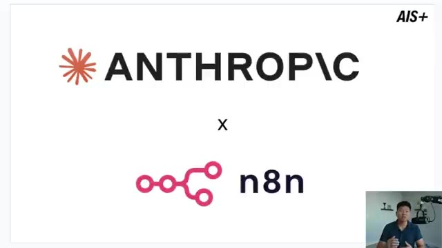
🔍 Agrandirjour. Il est actuellement disponible pour tout le monde, et vous pouvez l'utiliser via le web de Claude, les applications iOS, Android, et vous pouvez également l'utiliser via l'API, c'est pourquoi nous le connectons aujourd'hui à nos agents IA. Et fondamentalement, c'est simplement le dernier modèle d'Anthropic. Claude Sonnet 3.5 est un modèle d'intelligence artificielle conçu pour aider à coder, à construire des agents complexes, à exécuter des flux de travail commerciaux et de recherche, et à utiliser des ordinateurs comme un assistant humain. Voici une citation de Sean Ward, PDG d'iGent AI, Sonnet 3.5 redéfinit nos attentes. Il gère plus de 30 heures de codage autonome, libérant nos ingénieurs pour s'attaquer à des mois de travail architectural complexe.
Interface & Outils : Présentation de diapositives / Document textuel
Contenu textuel & Code : Texte présentant les spécifications de Claude Sonnet 4.5 : date de sortie (29 septembre 2025), disponibilité (web, iOS, Android, API) et description de ses capacités (codage, agents IA, flux de travail).
Action / Démonstration : Affichage des informations clés concernant le nouveau modèle Sonnet 4.5 pour appuyer les explications du présentateur.
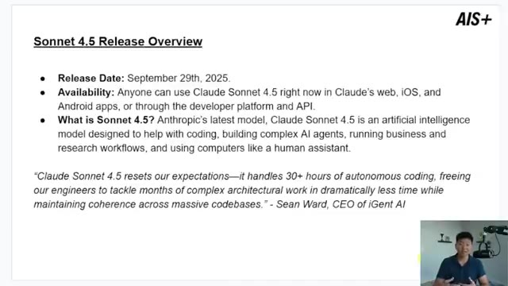
🔍 Agrandiren un temps considérablement réduit tout en maintenant la cohérence à travers des bases de données massives, ou désolé, des bases de code. Par le passé, une des limitations de beaucoup de ces modèles a été d'essayer de travailler sur des tonnes et des tonnes et des tonnes de contexte sur des tonnes et des tonnes de temps et comme dans le cadre d'un projet en cours. Il sera donc intéressant de voir comment Sonnet 4.5 change la donne. Et si vous avez entendu parler d'Anthropic, vous avez entendu parler de Claude, vous avez entendu parler d'Opus. Ils font tous fondamentalement partie de la famille de modèles Claude d'Anthropic. Nous en avons donc quelques-uns différents. Nous avons Haiku, nous avons Sonnet, et nous avons Opus.
Interface & Outils : Présentation (diapositive avec texte)
Contenu textuel & Code : Texte de présentation : "Sonnet 4.5 Release Overview", "Release Date: September 29th, 2025", "Availability", "What is Sonnet 4.5?" et une citation de Sean Ward, CEO of iGent AI.
Action / Démonstration : Présentation des détails de la sortie et des capacités du modèle d'intelligence artificielle Sonnet 4.5.
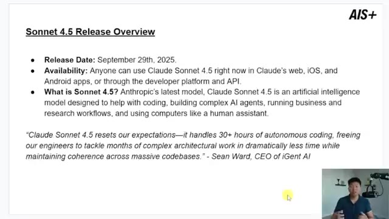
🔍 AgrandirIls servent tous fondamentalement à des usages différents. Haiku est plus rapide et plus abordable, Sonnet offre un bon équilibre, et puis Opus est comme un modèle de raisonnement à puissance maximale. Et en ce qui concerne le coût, vous pouvez voir la ventilation ici même. Sonnet 4.5 coûte exactement la même chose que Sonnet 4. Et comme vous pouvez le voir, les modèles Opus, qui sont des modèles de raisonnement, sont beaucoup plus chers. Alors pourquoi Sonnet 4.5 est-il meilleur que les modèles Sonnet précédents ? Eh bien, selon les benchmarks et les métriques, que nous examinerons après cette diapositive, Sonnet 4.5 surpasse les modèles antérieurs en matière de codage, de longs parcours et de tâches d'agents du monde réel. Il a une mémoire plus forte et peut gérer des projets plus importants sans oublier. Et il coûte
Interface & Outils : Présentation visuelle (diapositive / tableau)
Contenu textuel & Code : Tableaux avec colonnes "Model", "What it's for", "Why Choose It", "Input Cost", "Output Cost" et liste à puces "Why Sonnet 4.5 is Better".
Action / Démonstration : Affichage des caractéristiques et de la grille tarifaire des différents modèles Claude lors de la présentation.
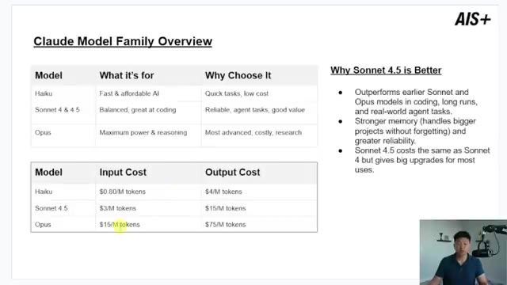
🔍 Agrandirla même chose que Sonnet 4, donc vous en avez plus pour votre argent. Maintenant, un point que je voulais aborder rapidement ici, c'est que la fenêtre de contexte de ce modèle Sonnet est de 200 000, ce qui fait beaucoup plus de jetons que vous ne le pensez probablement, mais ce n'est pas aussi grand que certains autres modèles sur le marché. C'est donc l'une des choses que je qualifiais de limitation de ce modèle. Comme vous pouvez le voir en regardant cette arène Vellum AI avec la fenêtre de contexte, vous pouvez voir, vous savez, Llama, Scout, Llama 4 Maverick, Gemini 2.Flash.
Interface & Outils : Interface web de Vellum (plateforme de comparaison de modèles d'IA)
Contenu textuel & Code : Tableau comparatif listant différents modèles (Llama, Gemini, GPT) avec leurs caractéristiques : fenêtre de contexte, coût d'entrée/sortie, vitesse et latence.
Action / Démonstration : Le présentateur commente le tableau de comparaison des fenêtres de contexte et des coûts des différents modèles d'IA sur le site de Vellum.
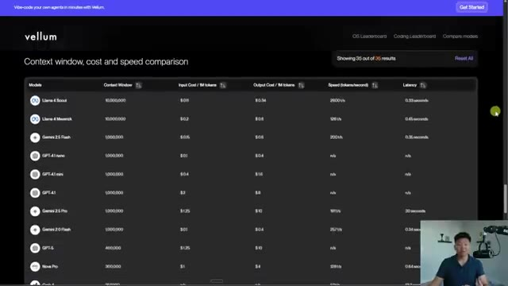
🔍 AgrandirCes types sont dans les millions. Nous avons même GPT 4.1 Nano Mini et 4.1 The Base. C'est aussi un million, 2.5 Pro Gemini. Et vous pouvez voir que GPT-5 en a 400 000. Et le maximum que Claude peut atteindre en ce moment a été de 200 000. À moins d'être sur les versions bêta ou entreprise, je crois que celles-ci montent jusqu'à un million. Mais quand même, je vais vous montrer combien de contexte nous allons fourrer dans cet agent et comment 200 000, c'est encore beaucoup de jetons.
Interface & Outils : Interface web de Vellum (tableau de comparaison des modèles d'IA).
Contenu textuel & Code : Tableau listant les modèles (Llama 4 Scout, Gemini 2.5 Flash, GPT-4.1, GPT-5, etc.) avec leurs fenêtres de contexte (ex: 10 000 000, 1 000 000, 400 000), coûts d'entrée/sortie et latence.
Action / Démonstration : Navigation et présentation du comparateur de modèles d'IA, illustrant les différentes tailles de fenêtres de contexte.
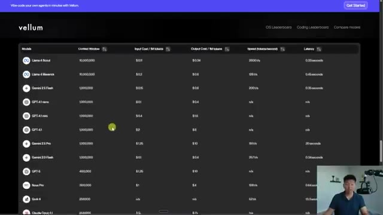
🔍 AgrandirDonc, bien sûr, je voulais vous montrer quelques repères. Alors regardons certains de ces tests. Le premier est le SWE Bench Verified, qui est un peu comme un examen de codage ou d'ingénierie logicielle. Sonnet 4.5 a obtenu un score de 77 à 82 pour cent, leader de l'industrie, à cet examen, ce qui signifie qu'il peut corriger ou écrire automatiquement des logiciels du monde entier et gérer des tâches de codage avec la compétence d'un développeur professionnel, ce qui est énorme pour les débutants comme moi en codage.
Interface & Outils : Présentation visuelle (diapositive avec graphique et texte explicatif) et incrustation vidéo du présentateur en bas à droite.
Contenu textuel & Code : Graphique comparatif des performances ("Software engineering SWE-bench Verified") avec les scores de Sonnet 4.5 (82.0%), Opus 4.1, Sonnet 4, GPT-5 Codex, GPT-5 et Gemini 2.5 Pro, ainsi qu'un texte descriptif sur les capacités de Claude Sonnet 4.5.
Action / Démonstration : Présentation des résultats de benchmarks et comparaison des performances des modèles de langage en ingénierie logicielle.
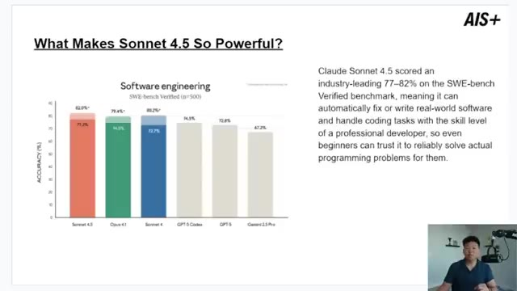
🔍 Agrandirparce que nous pouvons réellement lui faire confiance pour nous aider à résoudre nos problèmes de programmation. Et j'ai récemment fait l'une de ces mêmes types de vidéos lorsque GPT-5 est sorti, et vous pouvez voir que GPT-5 s'est classé ici, et que Sonnet 4.5 bat déjà GPT-5 et Codex. Nous pouvons également voir, selon ce tableau, que Sonnet 4.5 domine tous les modèles dans des tests clés comme le codage, l'utilisation d'ordinateurs, l'analyse financière, ce qui signifie qu'il est actuellement le meilleur pour automatiser de véritables emplois de logiciels et gérer des tâches informatiques complexes.
Interface & Outils : Présentation vidéo avec graphique statistique et vignette du présentateur en bas à droite.
Contenu textuel & Code : Graphique montrant les scores de précision de Sonnet 4.5, Opus 4.1, Sonnet 4, GPT-5 Codex, GPT-5 et Gemini 2.5 Pro, ainsi qu'un texte explicatif sur les capacités de codage de Claude Sonnet 4.5.
Action / Démonstration : Le présentateur commente le graphique comparatif des performances des modèles d'IA en génie logiciel.
Et je sais que je vais assez vite là-dessus, je veux juste passer aux choses amusantes dans n8n. Donc si vous voulez voir le document de sortie officiel d'Anthropic, cherchez simplement les notes de version de Claude Sonnet 3.5, ou je les mettrai également dans la description de cette vidéo. Maintenant, celui-ci, j'ai trouvé ça assez intéressant, qui se trouve également dans le document de sortie d'Anthropic, mais vous pouvez voir que nous avons la finance, la médecine, le droit et les STEM.
Interface & Outils : Présentation de diapositives / Document de performance des modèles d'IA
Contenu textuel & Code : Tableau comparatif intitulé "What Makes Sonnet 4.5 So Powerful?" listant divers benchmarks (agentic coding, computer use, financial analysis) pour Claude Sonnet 4.5, Claude Opus 4.1, Claude Sonnet 4, GPT-5 et Gemini 2.5 Pro. Texte explicatif à droite.
Action / Démonstration : Le présentateur commente le tableau comparatif des performances des modèles d'IA.
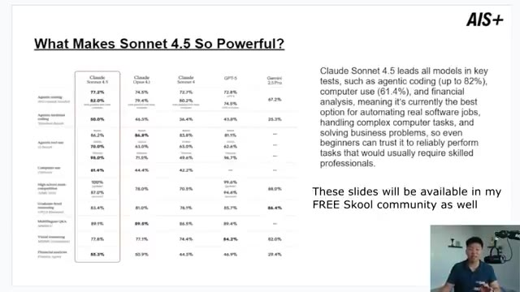
🔍 AgrandirEt en orange tout en haut, nous avons Sonnet 4.5, qui surpasse à peu près tous les autres modèles de la famille Claude dans ces catégories. Et cela signifie fondamentalement que Sonnet 4.5 est bien meilleur pour répondre à des questions compliquées sur la finance, le droit, la médecine et la science que les modèles d'IA précédents. Il donne donc des conseils plus précis et de niveau expert sur ces sujets, ce qui va être vraiment important lorsque vous utiliserez des agents IA.
Interface & Outils : Présentation visuelle (diapositive explicative)
Contenu textuel & Code : Graphiques de performance (Winrate vs baseline en %) pour différents modèles de la famille Claude, avec Sonnet 4.5 en tête, accompagnés d'un texte explicatif en anglais.
Action / Démonstration : Comparaison graphique des performances des modèles d'IA par le présentateur.
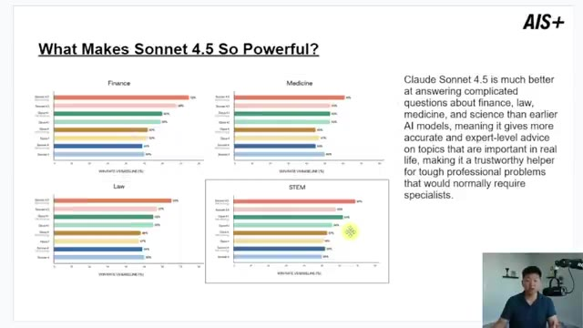
🔍 AgrandirVous devez toujours guider vos agents avec votre expertise métier et leur donner les bons outils et le contexte dont ils ont besoin pour accomplir le travail, mais c'est vraiment une excellente base de départ. Maintenant, bien sûr, à quel point tout cela est-il pratique ? Comment Sonnet 4.5 et N8N révolutionnent-ils l'automatisation ? Eh bien, nous avons une automatisation plus intelligente pour commencer. Les compétences expertes de Sonnet en matière de raisonnement et de codage permettent aux automatisations N8N de réfléchir, de résoudre des problèmes et de s'adapter aux problèmes.
Interface & Outils : Présentation vidéo avec diapositive explicative et incrustation vidéo du présentateur.
Contenu textuel & Code : Graphiques à barres horizontales comparant les performances de différents modèles d'IA (dont Sonnet 4.5) dans les domaines de la finance, de la médecine, du droit et des sciences/technologie/ingénierie/mathématiques (STEM), accompagnés d'un texte descriptif.
Action / Démonstration : Le présentateur commente les performances comparatives et la puissance du modèle Sonnet 4.5 par rapport aux versions précédentes.
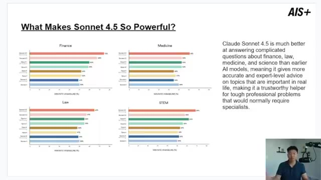
🔍 AgrandirNous avons également énormément de puissance personnalisée dans un seul flux de travail, car nous pouvons exécuter des flux vraiment avancés et y intégrer également ces modèles vraiment avancés. Et l'idée reste que l'intelligence artificielle doit automatiser des choses, mais que vous devez être présent pour l'approbation humaine et les boucles de rétroaction. Mais nous nous rapprochons du point où c'était du genre, bon, je ferais confiance à l'intelligence artificielle pour faire 60 %, puis 70 %, puis 80 %, et nous progressons lentement sur ce spectre.
Interface & Outils : Logiciel de présentation / Document texte
Contenu textuel & Code : Texte à puces détaillant les points clés : "Smarter Automation", "All-in-One Power", "Accessible AI", "Industry Impact" et "Bottom Line".
Action / Démonstration : Le présentateur explique les avantages de l'intégration de modèles avancés dans les flux de travail d'automatisation.
Bien sûr, cela devient de plus en plus accessible. Donc NNN est déjà très accessible au début. Je n'ai pas de bagage en programmation. Beaucoup des gens à qui j'enseigne n'ont pas de bagage en programmation. Donc NNN plus un modèle qui devient de plus en plus performant en programmation et en raisonnement et qui a besoin de moins d'invite système, cela réduit simplement la barrière à l'entrée pour se lancer dans la création d'automatisations IA personnalisées.
Interface & Outils : Logiciel de présentation / diapositives
Contenu textuel & Code : Texte détaillé : "How Sonnet 4.5 + n8n Revolutionizes Automation", avec des points clés sur Smarter Automation, All-in-One Power, Accessible AI, Industry Impact et Bottom Line.
Action / Démonstration : Présentation visuelle des points clés par le présentateur en incrustation.
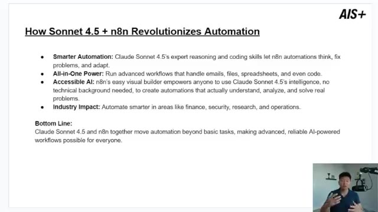
🔍 AgrandirEt puis bien sûr, l'impact sur l'industrie d'être plus intelligent dans des domaines vraiment clés, comme la finance, le droit, la médecine et la science. Et bien sûr, le code. Donc nous sommes sur le point d'aborder NNN. Je vais vous montrer comment nous pouvons connecter Sonnet 4.5 à nos agents IA. Je vais vous montrer un exemple de création de contenu avec le modèle de base. Nous allons le comparer à d'autres modèles et voir ses performances. Nous allons également faire une évaluation de la fenêtre de contexte. Nous allons donc y insérer une tonne d'informations et voir dans quelle mesure il est capable d'extraire les bonnes réponses de ce contexte. Et puis nous allons lui lancer une tonne d'outils sans même lui donner de prompt système et voir comment il peut tous les gérer. Donc ça a l'air bien. Passons à NNN. Très bien. Donc, première chose, je veux vous montrer
Interface & Outils : Présentation avec aperçu de workflow n8n et le présentateur en incrustation vidéo en bas à droite.
Contenu textuel & Code : Texte listant "Today's Experiment" (1. Connecting to a Sonnet 4.5 AI Agent in n8n, 2. Content Creation, 3. Context Window Evaluation, 4. Ultimate Assistant Tool Calling) et un schéma de workflow n8n intitulé "Evaluation Datasets".
Action / Démonstration : Le présentateur introduit les étapes de l'expérimentation du jour en affichant l'agenda à l'écran.
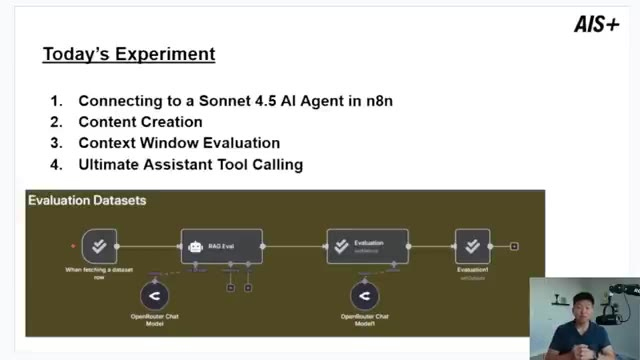
🔍 Agrandirvous les gars comment nous pouvons nous connecter à Sonnet 4.5 au sein de nos agents IA. Vous pouvez donc voir que nous avons un agent IA ici. Et ce que nous devons faire, c'est connecter un cerveau. Je vais donc cliquer sur le modèle de chat et je vais choisir Anthropic, mais j'ai remarqué un problème avec cela. Laissez-moi vous montrer ce que je veux dire par là. Et ensuite je vous montrerai comment nous pouvons le réparer. Mais ce que nous avons ici c'est Anthropic, ce que vous devez faire c'est aller ici et créer un compte Anthropic. Donc vous viendriez simplement ici, cliqueriez, créeriez de nouveaux identifiants, et cela vous demande une clé API. Vous iriez alors simplement sur Google et taperiez console Anthropic Claude. Et cela devrait ressembler à ceci. Une fois que vous êtes entré ici, c'est différent de votre environnement habituel de chat avec Claude. Vous devez vous assurer que vous
Interface & Outils : n8n (outil d'automatisation de workflows visuels)
Contenu textuel & Code : Nœuds de workflow n8n (« When chat message received », « AI Agent1 ») et options de modèles de langage (Anthropic, Azure OpenAI, AWS Bedrock, Cohere, DeepSeek, Google Gemini).
Action / Démonstration : Sélection et configuration d'un modèle de chat Anthropic pour l'intégrer à un agent IA au sein du workflow n8n.
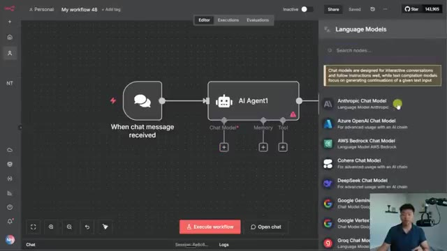
🔍 Agrandir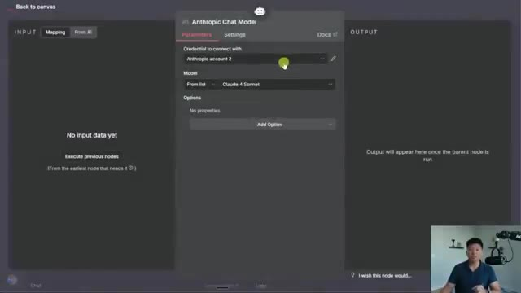
🔍 Agrandirentrez quelques informations de facturation. Donc, mettez simplement une carte. Et ensuite, quand vous allez dans cette section en bas appelée clés API, tout ce que vous avez à faire est de cliquer sur créer une clé, de lui donner un nom. Cela vous donnera la chaîne de caractères à copier. Et ensuite, vous allez simplement la coller directement ici, cliquer sur enregistrer, and vous devriez passer au vert. Une fois que vous avez fait cela, vous devriez pouvoir ouvrir cette liste de modèles. Et vous pouvez voir ici, nous avons Sonnet 4.5. Et laissez-moi vous montrer, les gars, ce que j'ai remarqué avec ce modèle. Quand je vais ici et que je dis, bonjour, j'obtiens fondamentalement ce problème, qui est mauvaise requête, vérifiez vos paramètres. Et il est indiqué que top underscore p ne peut pas être défini sur moins un. Et si je vais à top p, il n'est en fait pas défini
Interface & Outils : Console d'administration Anthropic (API Keys) et interface de workflow d'automatisation (n8n).
Contenu textuel & Code : Formulaire de création de clé API (nom de la clé, sélection de l'espace de travail) et liste des modèles Anthropic disponibles (Claude Sonnet 4.5, Claude Opus 4, etc.).
Action / Démonstration : Navigation dans la console pour créer une clé API, puis configuration des paramètres d'un nœud de chat dans l'outil d'automatisation.
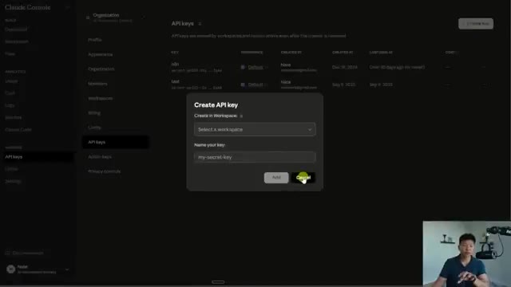
🔍 Agrandir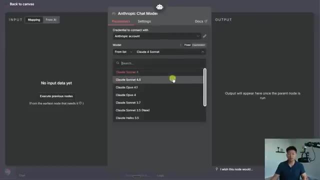
🔍 Agrandirà moins un. Et ensuite, j'ai cet autre problème où il est dit que quelque chose ne va pas avec la température. Donc je pense que c'est juste un problème en ce moment avec Sonnet 4.5 via Anthropic, parce que si je vais sur Sonnet 4 et que je reposte le même message, nous n'avons aucun problème. Donc la solution de contournement en ce moment, et la façon dont je vous conseillerais de le faire de toute façon, est de prendre un modèle de chat OpenRouter. C'est fondamentalement la même chose parce que cela vous permet de vous connecter à des tonnes de modèles différents. Et encore une fois, tout ce que vous avez à faire est d'entrer une clé API. Donc vous iriez sur openrouter.ai, vous pouvez voir, vous savez, vous pouvez router vers autant de modèles différents que vous le souhaitez. Et ensuite, vous viendriez juste ici, en haut à droite, aller dans les clés.
Interface & Outils : Interface web de l'outil d'automatisation n8n.
Contenu textuel & Code : Nœud de workflow "AI Agent1", configuration de "Anthropic Chat Model", et message d'erreur : "Bad request - please check your parameters: temperature and top_p cannot both be specified for this model."
Action / Démonstration : Le créateur montre l'interface d'automatisation et inspecte les paramètres d'un nœud pour identifier l'erreur de configuration du modèle IA.
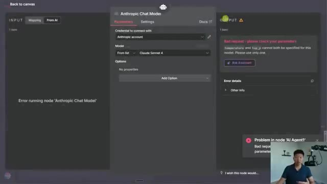
🔍 Agrandir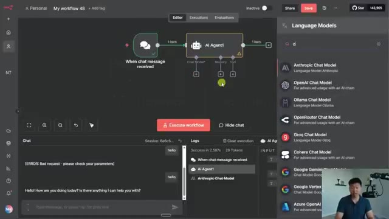
🔍 Agrandiret vous créerez une nouvelle clé. Et ensuite vous la copierez, vous la mettrez ici et après vous serez prêts. Et maintenant nous pouvons passer à Sonnet 4.5. Et si je dis bonjour, vous pouvez voir que cela va réellement fonctionner via OpenRouter. Et maintenant nous sommes bons avec Sonnet 4.5. Et je recommanderais en fait d'utiliser OpenRouter de toute façon, parce que vous pouvez suivre toute votre utilisation à travers tous vos différents modèles de chat et vous pouvez simplement garder vos informations de facturation au même endroit. Donc j'aime utiliser OpenRouter. Donc bref, passons à notre première expérience, qui concerne la création de contenu. Donc ce qui se passe ici, c'est que nous avons un agent IA et il n'a pas de système
Interface & Outils : n8n (outil d'automatisation de workflows) et interface web OpenRouter.
Contenu textuel & Code : Workflow d'agent IA avec nœud OpenRouter Chat Model, logs d'exécution réussie et graphiques d'activité OpenRouter montrant des appels API récents.
Action / Démonstration : Test d'un agent IA configuré via OpenRouter avec une saisie dans le chat ("hello") et vérification des statistiques d'utilisation.
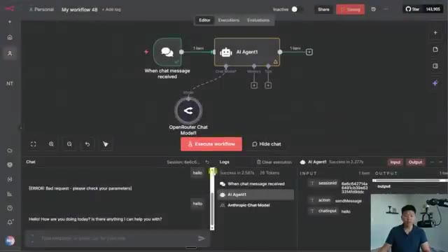
🔍 Agrandir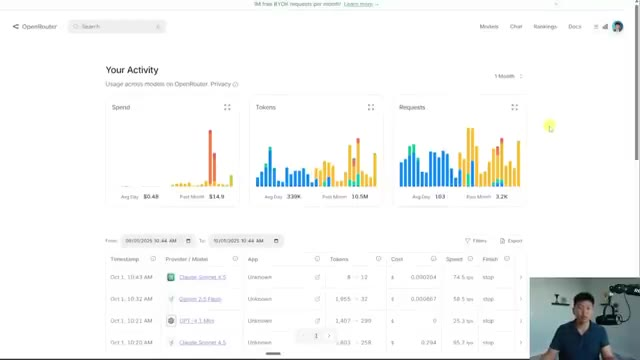
🔍 Agrandiraucun signal du tout. Donc la seule chose qu'il reçoit, c'est cette même entrée, qui demande simplement de créer un e-mail stylisé en HTML, qui doit ressembler à un rapport professionnel sur les effets d'un sommeil de mauvaise qualité ou d'un manque total de sommeil. Et pour ce premier exemple, nous allons l'essayer avec GPT 4.1. Nous venons donc de recevoir le résultat. Voyons ce que ça donne. Très bien. Nous y voilà, l'impact du manque de sommeil. Gardez à l'esprit que je ne lui ai donné aucun signal système du tout. Nous avons donc les effets clés. Nous avons une petite citation ici, et ensuite nous avons des conseils pour mieux dormir. Et vous pouvez voir que c'est assez concis, mais pas trop mal. Maintenant, nous allons continuer et le relancer. Cette fois-ci
Interface & Outils : n8n et Gmail
Contenu textuel & Code : Workflow n8n pour la génération d'e-mails par IA, et rapport HTML sur le sommeil dans Gmail.
Action / Démonstration : Exécution du workflow n8n qui envoie un e-mail stylisé généré par l'IA sur le sommeil.
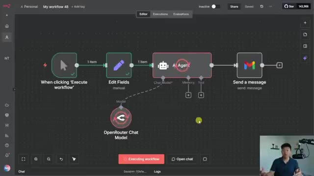
🔍 Agrandir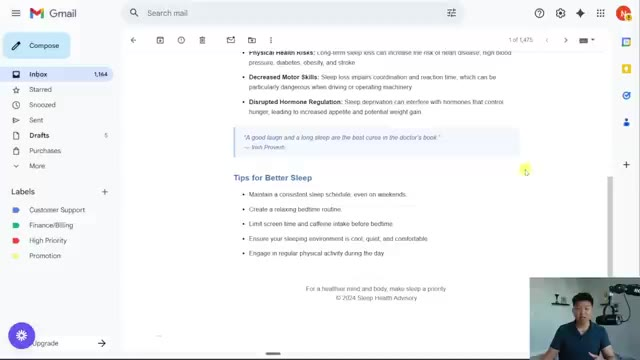
🔍 Agrandirnous utilisons Sonnet 4.5. Gardez à l'esprit, aucun system prompt et exactement la même entrée. Donc je ferai le point avec vous les gars quand nous aurons récupéré ça. Très bien. Voici donc ce que nous venons d'obtenir pour Sonnet 4.5. Vous pouvez voir que c'est beaucoup plus coloré avec le HTML, nous avons les effets de la privation de sommeil, nous avons une citation sur le fait que le sommeil n'est pas un luxe, nous avons sept à neuf heures recommandées, 35 pour cent des adultes n'en dorment pas assez, cela aborde ensuite certaines conséquences sur la santé au niveau de votre système cardiovasculaire, de la prise de poids, d'une fonction immunitaire affaiblie, des effets mentaux et cognitifs, nous avons une petite remarque importante ici et donc le point est de voir à quel point celui-ci est détaillé et à quel point il est réellement bien formaté, nous avons des recommandations
Interface & Outils : Interface web de messagerie (Gmail) affichant un contenu HTML rendu.
Contenu textuel & Code : Document HTML stylisé sur "The Effects of Sleep Deprivation" généré par Sonnet 4.5.
Action / Démonstration : Défilement vertical du rapport HTML reçu dans un e-mail de test.
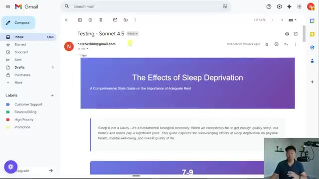
🔍 Agrandir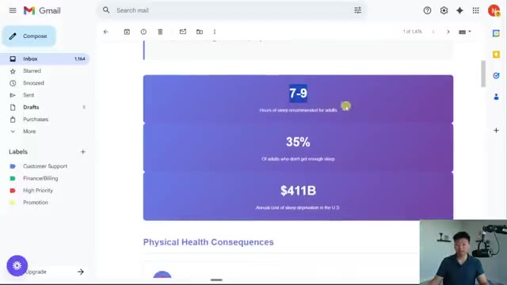
🔍 Agrandir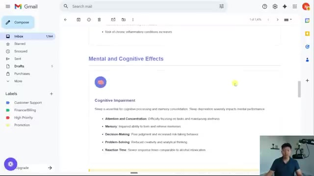
🔍 Agrandirpour un meilleur sommeil et ce qui est génial avec ça, c'est que si vous vous souvenez, cet agent n'a aucune consigne système et il n'a aucun outil. Il a donc été capable de tirer tout cela uniquement du modèle de base lui-même. Et nous allons en lancer un dernier avec ce qui est probablement à ce stade le plus grand concurrent de Sonnet, qui est GPT-5. Je vous recontacterai donc quand nous aurons reçu cet e-mail et nous verrons à quel point nous l'aimons par rapport à Sonnet 4.5. Très bien, voici l'exemple pour GPT-5, les effets du manque de sommeil. Nous avons les points clés. Nous avons ce qui se passe si vous ne dormez pas assez, cognitif, humeur et mental, métabolique et hormonal, cardiovasculaire,
Interface & Outils : n8n et Gmail
Contenu textuel & Code : Workflow d'automatisation n8n et un e-mail informatif sur les effets du manque de sommeil envoyé via l'agent IA.
Action / Démonstration : Présentation du workflow d'automatisation avec n8n et visualisation du résultat généré reçu dans Gmail.
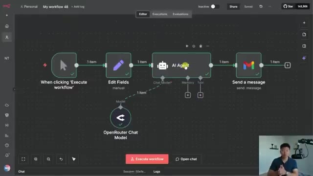
🔍 Agrandir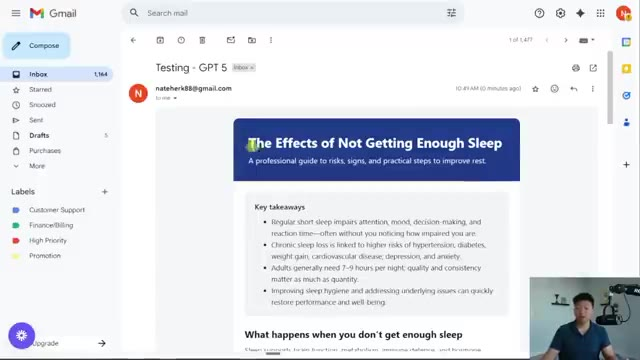
🔍 Agrandireffets à court terme, risques à long terme. Il aborde également certains signes indiquant que vous manquez peut-être de sommeil. Il aborde aussi le fait de dormir sept à neuf heures par nuit, ce qui est suffisant. Nous avons quelques mesures pratiques pour améliorer votre sommeil et savoir quand demander de l'aide professionnelle. Je dirais donc que c'est assez similaire à celui d'Anthropic. Celui-ci inclut effectivement quelques sources en bas de page, ce qui est plutôt sympa. Et il a vraiment l'air, à mon avis, un peu plus professionnel, comme un rapport.
Interface & Outils : Navigateur web (Gmail)
Contenu textuel & Code : Texte sur le sommeil (besoins en sommeil de 7 à 9 heures, étapes pratiques pour l'améliorer) et interface de messagerie Gmail.
Action / Démonstration : Consultation d'un document informatif concernant la quantité de sommeil nécessaire et les conseils pour l'améliorer.
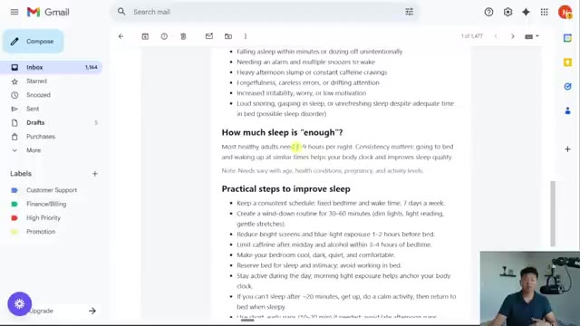
🔍 AgrandirEncore une fois, c'était Sonnet 4.5. C'était donc coloré. C'est toujours impressionnant. Mais en fait, je pense que je préférerais probablement ChatGPT 5 dans ce cas. D'accord. Donc pour l'instant dans le tableau de score mental, j'ai GPT qui mène pour l'instant, mais voyons ce qui se passe sur le prochain, qui va être l'évaluation de la fenêtre de contexte. Nous allons donc réellement utiliser une fonction d'évaluation de N8N, et nous avons des questions prêtes à être posées. Et ce que nous avons dans le prompt système de cet agent, c'est littéralement juste que vous êtes un agent utile. Et ensuite, nous avons inséré un PDF entier. Donc c'était comme
Interface & Outils : Gmail, interface de workflow RAG (n8n ou similaire)
Contenu textuel & Code : Texte d'un e-mail sur les risques de santé liés au sommeil / Diagramme de workflow de test RAG avec blocs "RAG Eval", "Evaluation", et modèles OpenRouter Chat.
Action / Démonstration : Navigation et présentation visuelle d'un workflow de test et d'évaluation RAG.
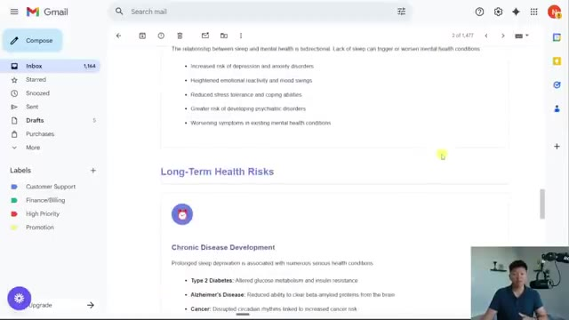
🔍 Agrandir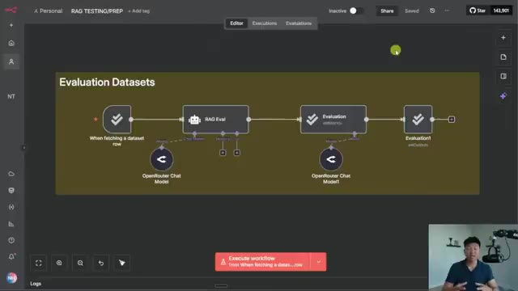
🔍 AgrandirLe rapport 10-K d'Apple. Et voici le document réel que nous avons extrait. Il s'agit donc d'un PDF de 121 pages contenant des tonnes et des tonnes d'informations. Et lorsque nous exécutons ceci, vous verrez que ce PDF entier fait un peu moins de cent mille tokens. Il est donc largement dans les limites de Sonnet 4.5. Mais de toute façon, ce que nous allons faire, c'est commencer ici avec GPT-5. Je vais aller dans l'onglet des évaluations et je vais simplement lancer ce test et nous obtiendrons un score de correction moyen et je vous dirai aussi combien coûte chacune de ces exécutions. Je reviendrai donc vers vous une fois que cette exécution de GPT-5 sera terminée. Très bien, donc GPT-5 vient de
Interface & Outils : Lecteur PDF / Navigateur web et interface de workflow de type n8n.
Contenu textuel & Code : Document PDF du rapport 10-K d'Apple et paramètres de configuration pour OpenRouter Chat Model.
Action / Démonstration : Présentation du document PDF source et configuration des paramètres d'un modèle d'IA dans un workflow.
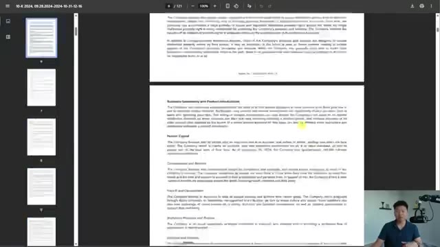
🔍 Agrandir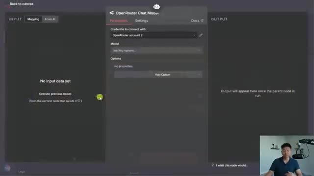
🔍 Agrandirterminé et vous pouvez voir qu'il a obtenu un score de correction de 4,2. Je vais donc rapidement changer ce modèle de chat pour Sonnet 4,5 et nous allons le relancer pour voir s'il va battre 4,2. Je vais donc lancer ce test et nous verrons bien. Et en fait, je viens de remarquer quelque chose de vraiment intéressant. Nous avons donc la comparaison des modèles entre GPT-5 et Claude Sonnet 4,5 ici même sur OpenRouter. Et vous pouvez voir tout d'abord que GPT-5 est moins cher. Donc environ moitié moins cher sur les tokens d'entrée et un peu moins cher sur les tokens de sortie également. Mais ce qui est intéressant ici, c'est que via OpenRouter, il semble que nous obtenions réellement un contexte
Interface & Outils : Interface de workflow (n8n ou similaire) et plateforme OpenRouter.
Contenu textuel & Code : Liste des modèles Anthropic (claude-3.5-sonnet, claude-3.7-sonnet, claude-sonnet-4.5) et tableau comparatif de spécifications techniques.
Action / Démonstration : Sélection du modèle Sonnet 4.5 dans le menu déroulant de configuration du nœud d'automatisation.
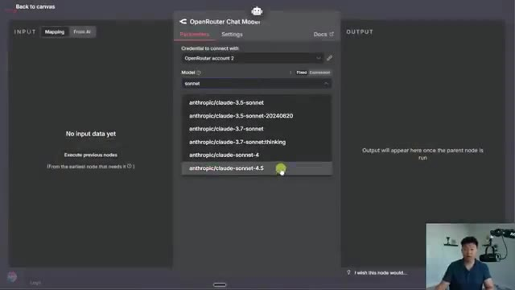
🔍 Agrandir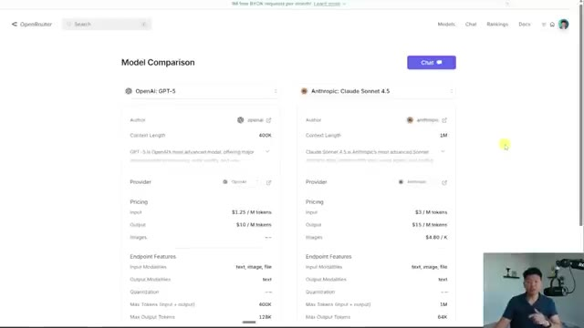
🔍 Agrandirfenêtre d'un million. Et donc je pense que si vous étiez passé par la console d'Anthropic, vous auriez obtenu 200k, mais je suppose qu'on a accès à la version bêta ou entreprise de Sonnet 4.5 via Open Router, donc c'est un énorme plus. Mais en raison de la différence de prix, si Anthropic n'obtient pas un meilleur score sur cette évaluation spécifique que pour ce cas d'usage précis, alors j'opterais pour GPT-5. Mais bien sûr, c'est pour cela que les évaluations sont là, car selon le cas d'usage, les différents modèles vont avoir des performances différentes. Très bien, donc Sonnet 4.5 vient de terminer et vous pouvez voir qu'il a tout juste battu GPT-5 avec un score de exactitude de 4,3, et c'est sur cinq. Maintenant, une chose que je voulais dire, c'est que je
Interface & Outils : OpenRouter et interface de test RAG web
Contenu textuel & Code : Comparaison de contexte (1M tokens pour Sonnet 4.5) et métriques d'exécution de tests (tokens, temps d'exécution, score de correction)
Action / Démonstration : Navigation et présentation comparative des modèles d'IA et de leurs coûts/capacités contextuelles
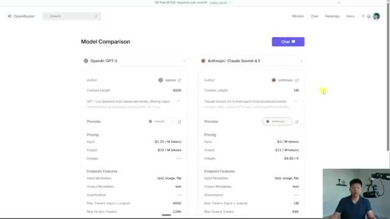
🔍 Agrandirn'a exécuté que 10 cas d'utilisation, ce qui est un ensemble de données beaucoup trop petit pour savoir vraiment si un modèle est meilleur ou non. Mais je voulais juste vous montrer rapidement comment je commencerais à envisager de comparer objectivement deux modèles différents. Maintenant, une chose à garder à l'esprit ici, c'est le prix. Donc si ces choses avaient exactement le même prix, je préférerais probablement Sonnet 4.5 dans ce cas d'utilisation. Mais comme nous le savons, GPT est un peu moins cher, et si nous allons dans mon activité ici sur Open Router, vous pouvez voir que chacune de ces exécutions prenait environ 96 000 jetons pour Sonnet 4.5, et cela revient à environ 30 centimes. Et quand nous regardons l'évaluation précédente, cela prenait environ 90 000 jetons
Interface & Outils : Application web d'évaluation RAG et tableau de bord OpenRouter.
Contenu textuel & Code : Tableaux de données, horodatages, métriques de performance, tokens, coûts, et scores de correction des différents modèles de langage.
Action / Démonstration : Navigation et présentation comparative des résultats d'exécutions et des métriques d'utilisation des modèles IA.
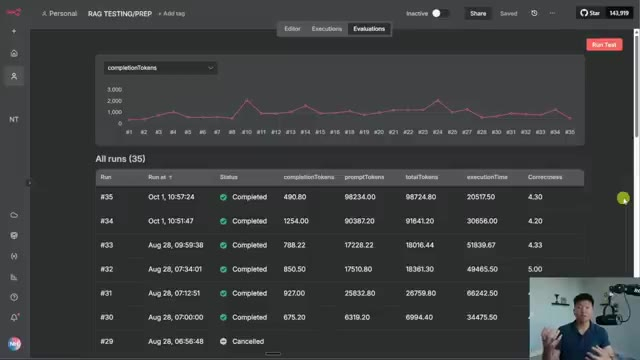
🔍 Agrandir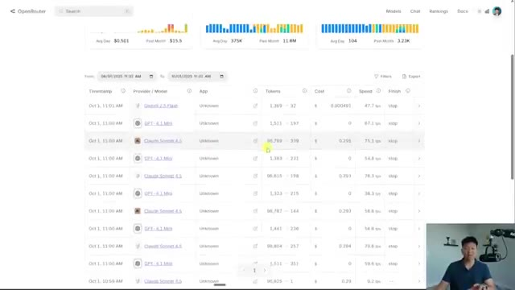
🔍 Agrandirpour GPT-5, qui arrive ici à zéro, mais quand on fait le calcul, c'est environ 10 à 12 cents. Donc à peu près moitié moins cher. Et donc la question, bien sûr, est de savoir si ça vaut le coup de payer moitié moins pour des résultats similaires. Ce que je dirais, c'est que vous voulez probablement exécuter plus que seulement 10 ensembles d'évaluation. vous voulez probablement en exécuter près de 100, peut-être même 200. Et ensuite, vous avez beaucoup plus de données parmi lesquelles choisir. Donc je suis en fait revenu très vite pendant que j'étais en train de monter parce que je voulais juste tester quelques modèles de plus. Et vous pouvez voir que c'est vraiment intéressant. En général, ils obtiennent des scores assez élevés. Celui-ci était Sonnet 4. Celui-ci était Gemini Flash, qui est vraiment bon pour trouver l'aiguille dans la
Interface & Outils : Interface web de test et d'évaluation RAG
Contenu textuel & Code : Graphique montrant l'évolution des tokens de complétion (#1 à #36) et tableau listant les exécutions (Run #35 à #29) avec leur statut (Completed, Cancelled), les tokens de complétion/prompt/totaux, le temps d'exécution et le score de correction.
Action / Démonstration : Analyse et affichage des résultats des différents tests d'exécution de modèles d'IA sur le tableau de bord.
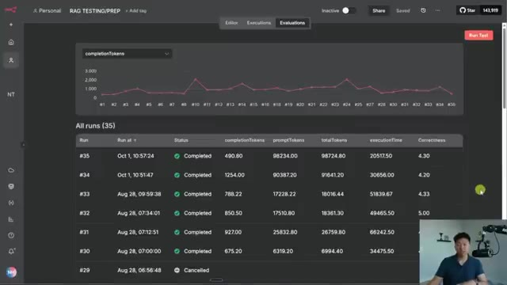
🔍 Agrandir...un test de la botte de foin ou le fait de parcourir des tonnes de contexte et d'en extraire les bonnes informations. Ici, c'était GPT-4o. Là, c'était Sonnet 3.5. Et ici, c'était DeepSeek R1. L'idée étant que tous ces modèles ont un nombre de tokens différent, un temps d'exécution différent et tout ce genre de choses. Il faut donc vraiment soumettre plus que seulement 10 questions au jeu de données. Mais tout l'enjeu est de déterminer quel modèle spécifique de quelle famille fondamentale spécifique est optimal pour ce cas d'usage précis. Quoi qu'il en soit, je me suis dit que vous trouveriez ça intéressant. Revenons à la vidéo. Mais bref, j'espère que cela vous a été utile et vous montre peut-être comment vous pourriez commencer à réfléchir au choix entre
Interface & Outils : Application web de test RAG (interface de type tableau de bord d'évaluation de modèles IA).
Contenu textuel & Code : Tableau listant 40 exécutions (runs) avec des colonnes : Run, Run at, Status (Completed), completionTokens, promptTokens, totalTokens, executionTime, et Correctness. Graphique de tendance en haut.
Action / Démonstration : Le présentateur présente et commente les résultats comparatifs des différents modèles d'IA sur le test de RAG.
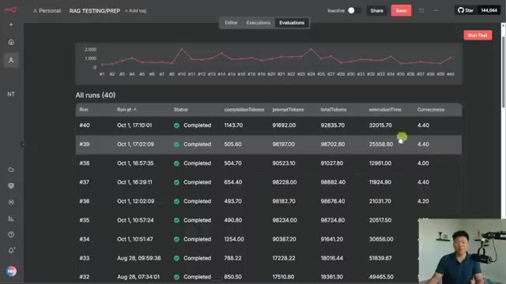
🔍 Agrandirdifférents modèles. Donc sur ce, passons à la dernière expérience, qui consiste à faire un peu d'appel d'outils avec nos agents dans n8n. D'accord, pour le dernier exemple, ce que nous allons faire, c'est que nous avons Sonnet 3.5, comme vous pouvez le voir, connecté à une tonne de ces différents outils. Donc des choses basiques comme l'envoi d'e-mails, la gestion d'événements de calendrier et la recherche sur le Web, des choses comme ça. Donc ce que je teste ici, c'est à quelle vitesse un débutant peut arriver dans n8n et connecter des outils à un agent, et nous n'avons même pas de prompt système ici. Tout ce que nous faisons, c'est lui donner l'heure et la date d'aujourd'hui. Commençons donc par un exemple rapide. Je vais dire : utilise ta base de données de contacts pour obtenir l'e-mail de Michael Scott.
Interface & Outils : n8n (éditeur de workflow d'automatisation)
Contenu textuel & Code : Un nœud "Sonnet 4.5 Agent" connecté à de multiples sous-nœuds d'outils (Send Email, Email Reply, Update Event, Create Event, Search in Tavily, Get Contacts, etc.)
Action / Démonstration : Présentation du workflow d'appel d'outils avec l'agent IA relié à diverses applications.
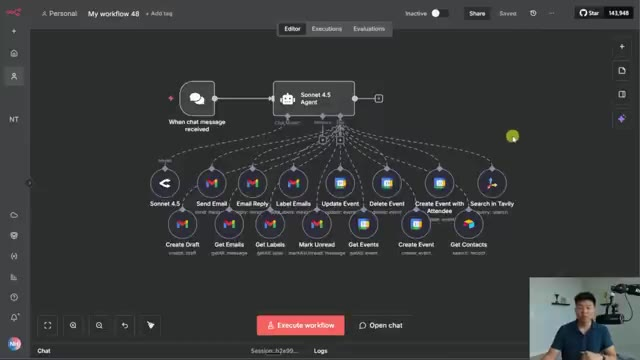
🔍 Agrandiret lui envoyer un e-mail pour lui dire que je vais avoir 20 minutes de retard à la réunion d'aujourd'hui. Donc, nous allons l'envoyer. Nous allons masquer le chat et nous allons voir ce qu'il essaie de faire ici. D'accord. Intéressant. Nous avons donc un problème avec la façon dont il essaie d'analyser les arguments de l'outil pour le modèle de chat. Je me demande donc si c'était un problème lié aux outils plutôt qu'à l'appel de certains éléments tels que les sous-flux de travail. Je vais donc réessayer dans ce flux de travail où nous avons un assistant ultime avec des sous-agents plutôt que de simples outils. Je dis donc à l'agent de faire des recherches sur les agents vocaux, puis de les envoyer à Michael Scott. Et vous pouvez voir ce
Interface & Outils : n8n (éditeur de workflow d'automatisation)
Contenu textuel & Code : Un nœud d'agent "Sonnet 4.5 Agent" connecté à diverses actions (Send Email, Get Emails, Update Event, Create Event, etc.) et une webcam du présentateur en bas à droite.
Action / Démonstration : Le workflow est en cours d'exécution avec un bouton rouge "Executing workflow" en bas de l'écran.
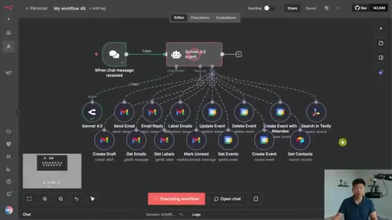
🔍 Agrandirce qui se passe ici, c'est qu'il utilise Perplexity. Il appelle également l'agent de contact. Et maintenant, nous allons voir s'il est capable de transmettre ces informations à l'agent de messagerie et d'envoyer cet e-mail pour nous. Jusqu'ici, tout va bien. Vous pouvez voir qu'il a également été capable d'appeler l'agent de messagerie. D'accord, vous pouvez donc voir qu'il a effectivement terminé et qu'il a dit qu'il avait fait tout cela pour nous. Allons jeter un coup d'œil à l'e-mail. Très bien, j'ai donc pu l'envoyer à la bonne adresse e-mail de la part de Michael Scott.
Interface & Outils : Interface web de workflow / plateforme d'automatisation d'agents IA (style n8n).
Contenu textuel & Code : Nœuds de workflow : "When chat message received", "Ultimate Assistant", reliés à différents modules (OpenRouter Chat Model, Simple Memory, Email Agent, Calendar Agent, Contact Agent, Content Creator Agent, Tavily, Perplexity, Calculator).
Action / Démonstration : Visualisation et configuration des connexions entre l'assistant principal et les différents agents ou outils d'automatisation.
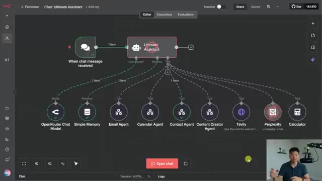
🔍 AgrandirNous avons les agents vocaux IA qui sont des systèmes logiciels intelligents qui comprennent, interprètent et répondent à la parole humaine en temps réel, comment ils fonctionnent. Nous avons le NLP. Nous avons le TTS. Nous avons les applications actuelles, les avantages et les derniers développements, puis un mot de la fin de Nate. Donc, comme vous pouvez le voir, il est plus que capable de gérer des choses comme ça. Le problème ici était simplement qu'il essayait d'utiliser des outils directement plutôt que des sous-flux de travail pour une raison quelconque.
Interface & Outils : Interface web de workflow / plateforme d'agents IA (Langflow/Flowise)
Contenu textuel & Code : Message d'erreur : "Problem in node 'Sonnet 4.5 Agent' - Failed to parse tool arguments from chat model response... SyntaxError: Unexpected end of JSON input"
Action / Démonstration : Affichage d'un workflow d'agent IA complexe avec des intégrations Gmail et un journal d'erreurs de parsing de modèle de langage.
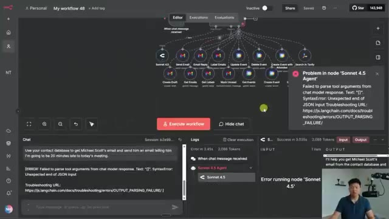
🔍 AgrandirEt honnêtement, je ne sais pas exactement pourquoi cela se produit. et ici, vous pouvez voir que nous utilisons le Sonnet 4.5 de Claude. Vous avez également vu qu'il a appelé Perplexity, et il n'y a pas eu de problème là. Et les outils que nous utilisons au sein de ces agents ici bas sont exactement les mêmes outils que nous avons juste ici. Et donc, si nous avons juste cet agent Sonnet 4.5 de base avec un seul outil pour envoyer un e-mail, et que je dis : "veuillez envoyer un e-mail à natearobaseexample.com pour demander ce qui se passe", et que nous envoyons cela.
Interface & Outils : Interface web de construction de workflows d'agents IA (type n8n ou plateforme similaire de gestion d'agents).
Contenu textuel & Code : Diagramme de nœuds représentant le flux de données : "When chat message received" -> "Ultimate Assistant" -> connexions multiples vers divers outils et services (OpenRouter Chat Model, Simple Memory, Email Agent, Calendar Agent, Contact Agent, Content Creator Agent, Tavily, Perplexity, Calculator).
Action / Démonstration : Visualisation et explication de l'architecture du workflow et des outils connectés aux agents par le présentateur.
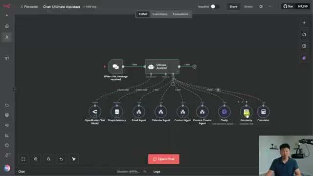
🔍 AgrandirEst-ce que ça va être capable de faire ça ou pas ? Peut-être que c'était juste submergé. D'accord, donc on dirait que c'était peut-être juste submergé par tous les outils auxquels il avait accès. Et vous pouvez voir qu'on a bien reçu cet e-mail à nate@example.com qui demandait ce qu'il y avait. D'accord, essayons un autre. Je viens juste d'ajouter deux outils de plus et je vais continuer et dire, s'il vous plaît faites des recherches sur la différence entre les chiens et les chats et envoyez ça sous forme d'e-mail à nate@example.com et créez aussi un événement de calendrier pour le déjeuner aujourd'hui à 14h00 avec bob@example.com.
Interface & Outils : Gmail, plateforme de workflow n8n (avec intégration LangChain).
Contenu textuel & Code : - Image 1 : E-mail envoyé à nateherk88@gmail.com. - Image 2 : Logs d'exécution montrant l'action "sendMessage" et le prompt utilisateur "Please send an email to nate@example.com asking what's up".
Action / Démonstration : Validation du succès de l'automatisation : l'agent IA a interprété le prompt et a exécuté avec succès l'envoi de l'e-mail via l'outil connecté dans n8n.
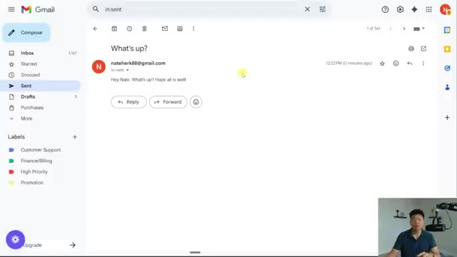
🔍 Agrandir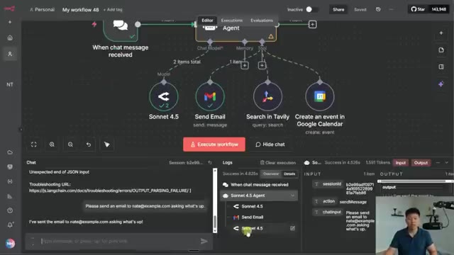
🔍 AgrandirTrès bien, voyons s'il peut gérer ces requêtes avec trois outils. Il n'y a pas de prompt système ici à part la date et l'heure. Il vient juste de créer l'événement dans le calendrier. Il a juste cherché joyeusement et il semble qu'il n'aura aucun problème à renvoyer cette recherche vers l'outil de messagerie. Et il devrait être capable d'envoyer cet e-mail. D'accord, super. Donc tout est terminé. Si je vais dans mon calendrier vite fait, nous avons déjeuner avec Bob et il y a bob@example.com.
Interface & Outils : n8n (interface web de gestion de workflows d'automatisation)
Contenu textuel & Code : Workflow nommé 'My workflow 48' avec un nœud déclencheur 'When chat message received', un nœud 'Sonnet 4.5 Agent' et trois nœuds d'outils connectés (Sonnet 4.5, Send Email, Search in Tavily, Create an event in Google Calendar).
Action / Démonstration : Le workflow est en cours d'exécution ('Executing workflow') et l'agent traite les requêtes en utilisant les différents outils connectés.
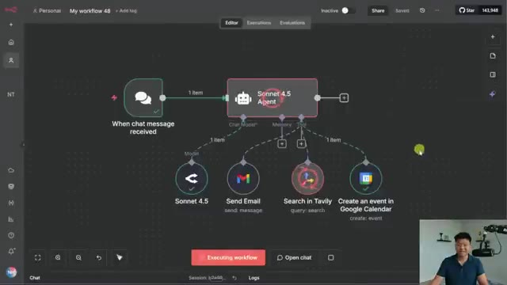
🔍 AgrandirNous avons aussi dans mon e-mail deux nate at example.com, des recherches sur la différence entre les chats et les chiens. Et c'est formaté assez bizarrement à cause de la façon dont l'outil a été configuré ici. Comme vous pouvez le voir, il a juste été configuré pour envoyer du HTML, pas du texte. C'est donc arrivé bizarrement. Mais le fait est qu'il peut appeler des outils et qu'il n'a pas de problèmes ici, comme vous pouvez le voir.
Interface & Outils : Interface web de messagerie (Gmail) et éditeur de workflow visuel d'automatisation.
Contenu textuel & Code : E-mail reçu avec du contenu sur les différences entre chats et chiens ; diagramme de workflow avec un nœud "Sonnet 4.5 Agent" connecté à plusieurs services.
Action / Démonstration : Présentation de l'e-mail généré par l'outil et explication du formatage lié à l'envoi en HTML.
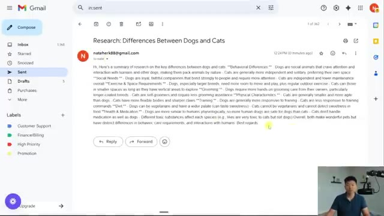
🔍 Agrandir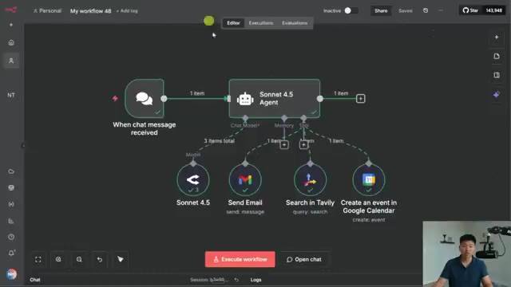
🔍 AgrandirJe pense que pour une raison quelconque, je l'ai simplement submergé avec trop d'outils et ce n'est même pas un exemple réaliste de ce que vous voudriez faire avec autant d'outils, car cela a fonctionné parfaitement ici lorsque nous avions l'assistant ultime où nous avions tous ces outils regroupés en agents spécialisés et cela a fonctionné beaucoup mieux. Cela conclut donc les expériences que nous avions pour aujourd'hui. En fin de compte, lorsqu'il s'agit de choisir un modèle de chat, ce que je fais habituellement, c'est de m'en tenir à quelque chose pour commencer, comme un GPT 4.0 ou un 5. Et puis à partir de là, je me dis, bon, en fonction de ce cas d'utilisation en ce moment, quel modèle est-ce que je pense qui pourrait être meilleur ? Et puis je lance des évaluations pour voir s'il est meilleur ou non.
Interface & Outils : Interface web de conception de workflows / diagramme d'agents IA (type n8n ou similaire).
Contenu textuel & Code : Schéma d'automatisation nommé 'Chat: Ultimate Assistant' montrant un nœud principal 'Ultimate Assistant' recevant des messages de chat et connecté à plusieurs outils spécialisés (Tavily, Perplexity, Calculator, etc.).
Action / Démonstration : Visualisation et explication du workflow de l'assistant ultime regroupant de nombreux outils et sous-agents.
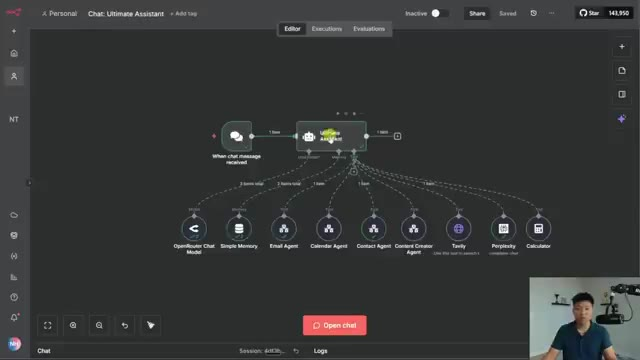
🔍 AgrandirPlus vous jouez avec des agents, plus vous commencerez à comprendre lesquels vous aimez utiliser pour certains scénarios. Il est donc difficile de dire que, vous savez, Sonnet 4.5 est le nouveau roi des LLM, car chaque LLM est meilleur dans des domaines différents. Mais la bonne nouvelle, c'est que si vous voulez faire partie d'une communauté où vous pouvez constamment avoir des conversations comme celle-ci et entendre ce que les autres utilisent pour différents cas d'utilisation, alors consultez définitivement ma communauté Plus. Le lien se trouve dans la description. Nous avons une super communauté de plus de 2 500 membres qui construisent avec NNN chaque jour et bâtissent des entreprises avec NNN. Nous avons également une section de cours avec trois formations pour l'instant. Nous avons Agent Zéro, qui sont les bases pour les débutants. Nous avons 10 heures à 10 secondes où nous plongeons dans NNN. Et enfin, nous avons One Person AI Agency, qui est
Interface & Outils : n8n (éditeur de workflow) et plateforme web communautaire (AI Automation Society Plus)
Contenu textuel & Code : Diagramme d'automatisation d'agent IA avec divers sous-agents et connecteurs d'outils, et interface de cours en ligne.
Action / Démonstration : Présentation de la structure d'un agent IA multi-outils dans n8n et des ressources de formation de la communauté.
Notre nouveau cours pour les membres annuels, où nous parlons de poser les bases d'une entreprise d'automatisation de l'IA évolutive. J'adorerais donc vous voir dans ces appels et dans cette communauté, mais c'est tout pour cette vidéo. Si vous avez aimé ou si vous avez appris quelque chose de nouveau, n'hésitez pas à mettre un pouce bleu. Ça m'aide vraiment énormément. Et comme toujours, je vous remercie d'être arrivés jusqu'à la fin de la vidéo. Je vous vois dans la prochaine. Merci à tous.
Interface & Outils : Interface web n8n (éditeur de workflow graphique)
Contenu textuel & Code : Workflow "Ultimate Assistant" connectant des agents (Email, Calendar, Content Creator), des modèles (OpenRouter) et des outils de recherche (Tavily, Perplexity, Calculator).
Action / Démonstration : Visualisation et présentation de l'architecture d'un assistant IA multi-agents et de ses intégrations.